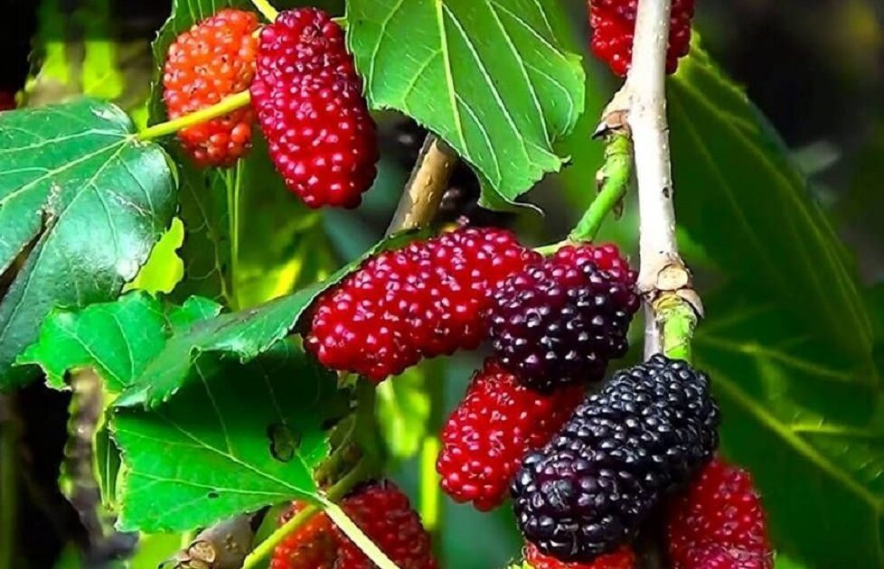

Ayuntamiento de Senés
JARDIN BOTANICO DE ESPECIES AUTOCTONAS DE SENES

Morus alba / Morus nigra

La morera (Morus alba / Morus nigra) es un árbol caducifolio ampliamente cultivado en el ámbito mediterráneo, conocido por su sombra y por sus frutos, las moras.
Presenta un tronco robusto y una copa amplia y densa. Sus hojas son grandes, de forma variable y color verde intenso. Produce frutos carnosos de color blanco, rojo o negro según la especie, muy apreciados tanto por las personas como por la fauna.
La morera se distribuye por regiones templadas y mediterráneas, siendo cultivada en jardines, huertos y zonas urbanas. Se adapta bien a distintos tipos de suelo.
En el entorno de Senés, es habitual en patios, caminos y espacios públicos por su capacidad de dar sombra.
Las moras son frutos ricos en vitaminas, antioxidantes y fibra. Son apreciadas por su sabor dulce y sus beneficios para la salud.
Las hojas de la morera también han tenido usos tradicionales, especialmente en la alimentación del gusano de seda.
La morera simboliza la generosidad y la protección, al proporcionar sombra y alimento.
También representa la tradición y el aprovechamiento de los recursos naturales.
En Senés, la morera ha sido utilizada como árbol de sombra, famosos los de La Fuente, donde todos los niños han comido moras. Los agricultores sacaban un complemento en sus ingresos con la seda de sus gusanos que alimentaban con las hojas de los morales.
Además la mora se consumía por sus propiedades curativas, estimula la sangre, protege los musculos y como tiene mucho antioxidante es bueno para el corazón, disminuye el colesterol malo y aumenta el bueno.
Las moras maduran en primavera y principios de verano.
La morera ha sido fundamental en la producción de seda, ya que sus hojas son el alimento principal del gusano de seda.
Es un árbol muy valorado por su sombra en climas cálidos.